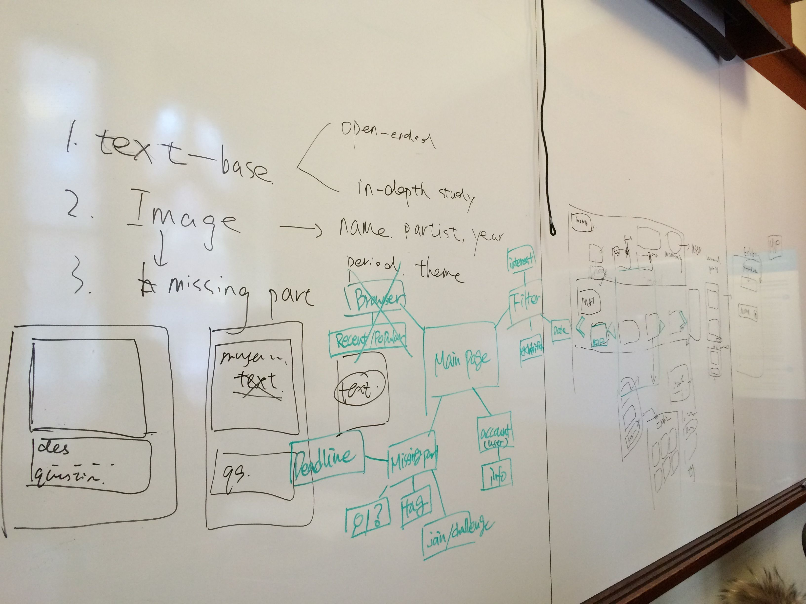
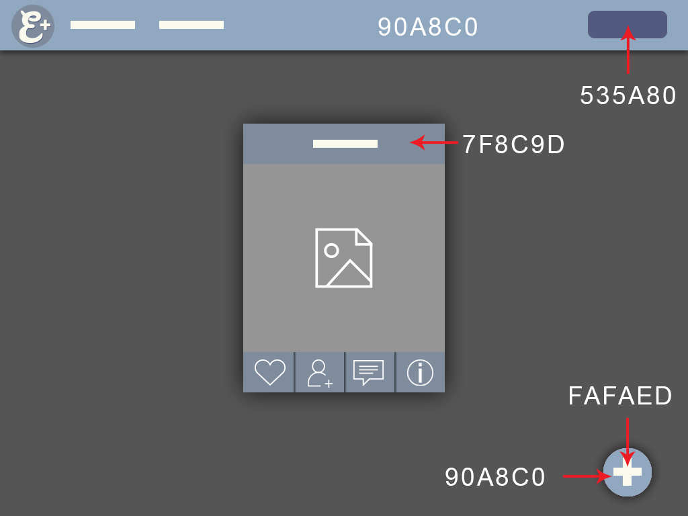
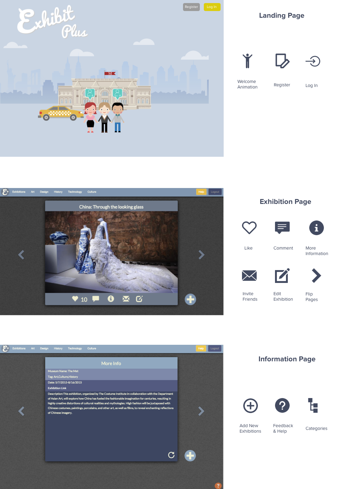

UX Researcher
UX Designer
Jan 2015 - May 2015
Survey
One-on-one Interview
Userbility Testing
Wireframes
Prototyping
Exhibit+ is a web application which motivates people's museum visits from social aspects. A problem of current museum websites (e.g. Columbia Art Initiative) is that there is too much information provided and it is not generated and reviewed by students. Students regard information provided by peers as valuable and relevant. In acknowledging these factors, our app provides succinct information about a limited number of socially promoted exhibitions as a team project for the class “Theories and Programming of Interactive Media”.
In order to better understand students’ motivation, decision-making process and context of their museum visits, we surveyed 25 current students and conducted in-depth interviews with 7 students, specifically to understand their--
Since it is a 4-month project including interaction + visual design and development of the application, we need to validate the hypothesis under time constraint. That’s why we did a survey to understand the general user needs to be more informed before conducting in-depth user interviews.
Based on 25 responses in the initial survey, we found that
  Role: Conducted user research, developed end-to-end user interface and user experience for museum education, designed and developed mockups based on user feedback.